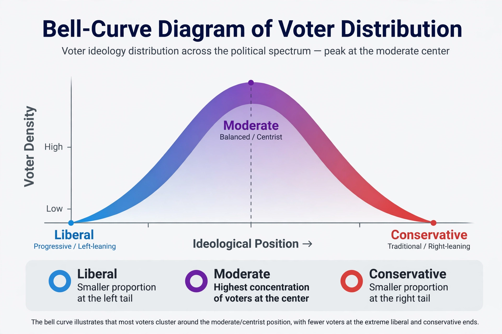

In politics, a moderate is a person or position situated within the mainstream of a political spectrum, generally avoiding the extremes of left and right. Moderates are typically characterised by support for gradual change, compromise, and incremental reform rather than rapid or revolutionary transformation.
The label is relative: a position considered moderate in one country or era may be regarded as conservative or progressive in another. In the United States, "moderate" is commonly used for voters and politicians who hold a mix of liberal and conservative views or who prioritise pragmatism over ideology; moderate wings have historically existed in both the Democratic and Republican parties. In multiparty systems, centrist parties often describe themselves as moderate.
Political scientists debate how many self-described moderates hold genuinely centrist policy views, as opposed to holding cross-cutting combinations of strongly liberal and strongly conservative positions. Research on the "median voter" treats the moderate centre as decisive in two-candidate elections, since candidates are pulled toward the position of the voter in the middle of the distribution.
Moderation is closely associated with centrism, though the terms are not identical: centrism denotes a position near the centre of a spectrum, while moderation denotes a temperament or approach favouring restraint and compromise. The more reform-oriented variant is sometimes called radical centrism. Critics of moderation argue that it can entrench unjust status quos; defenders reply that it protects social stability and democratic norms.
See also: Centrism · Political spectrum · Swing voter